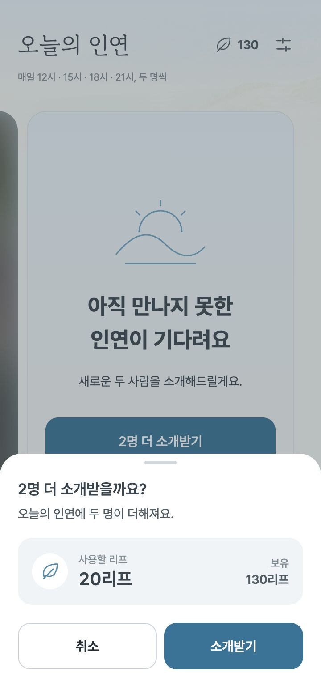
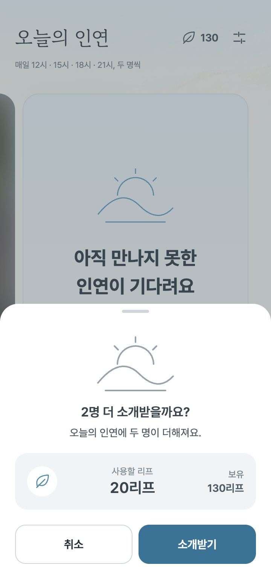
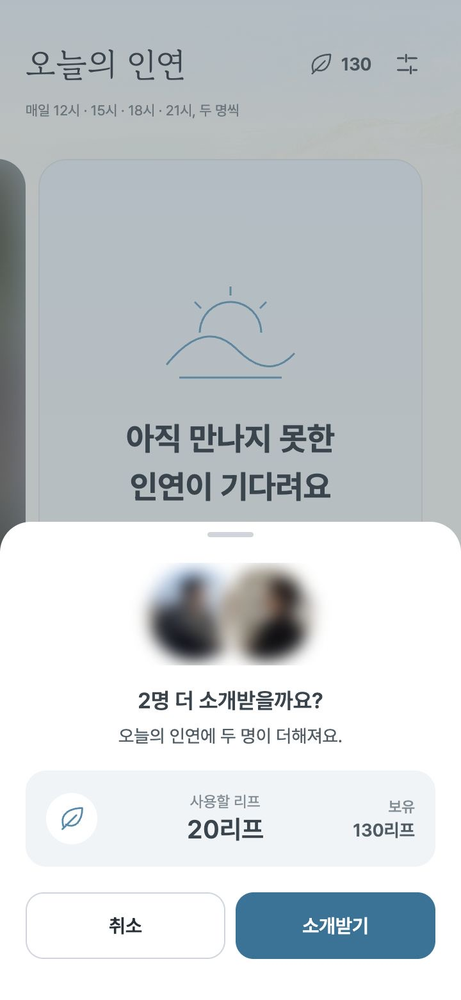
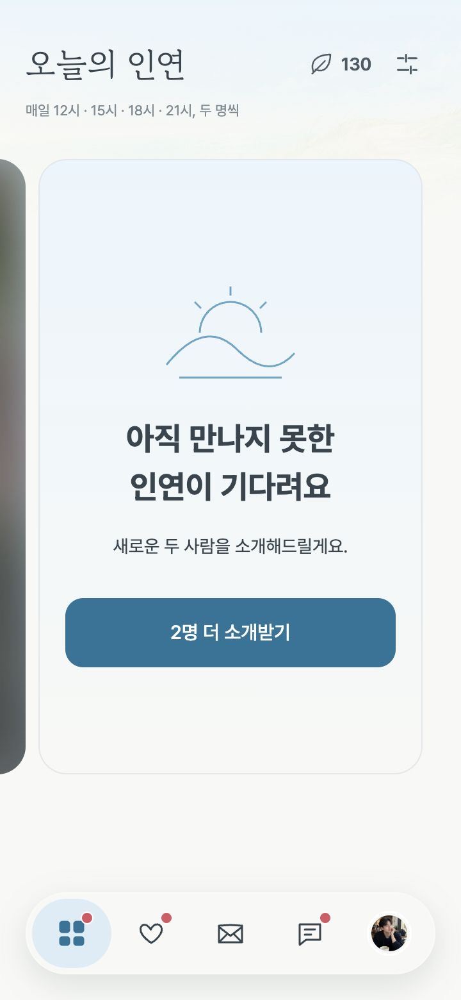
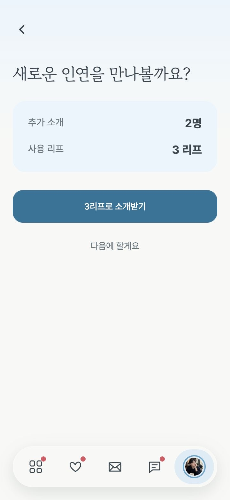
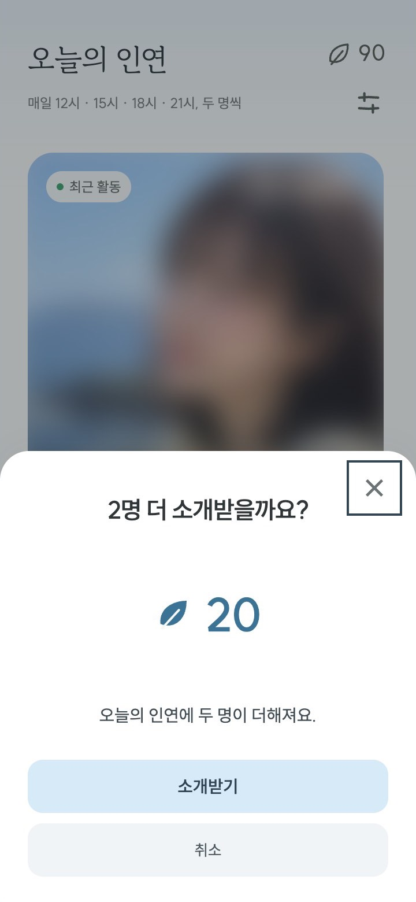

2명 더 소개받기 · 페이지 대신 바텀시트
- 피드백: "2명 더 소개받기"를 누르면 새 페이지로 넘어가지 말고, 인연 홈(뒤 그림)이 보이는 채로 아래에서 시트가 화면 중간까지 올라와요.
- 모든 안 공통: 제목 "2명 더 소개받을까요?" · "오늘의 인연에 두 명이 더해져요." · 사용할 리프 / 보유 리프 · 취소 / 소개받기. 편지 "답장을 쓸까요?" 시트와 같은 부품이에요. 리프가 모자라면 "N리프 더 필요해요" + "리프 충전하기"로 바뀌어요.
- 가격: 지금 데모는 3리프, 팀 링크는 20리프예요. 시안은 팀 링크대로 20으로 찍었어요.
바텀시트

A글 + 리프 상자 · 답장 확인 시트와 똑같은 모양. 가장 짧아요

B위에 해 그림 · 카드의 해 그림을 시트 위에 한 번 더. 눌렀던 카드와 이어져 보여요

C흐린 두 사람 · 새로 올 두 사람 사진을 흐리게 겹쳐서. 무엇을 받는지 바로 보여요
지금 · 팀 링크

지금마지막 카드 "2명 더 소개받기"

지금누르면 새 페이지 "새로운 인연을 만나볼까요?"

팀 링크바텀시트 · 리프 20 · 소개받기 / 취소